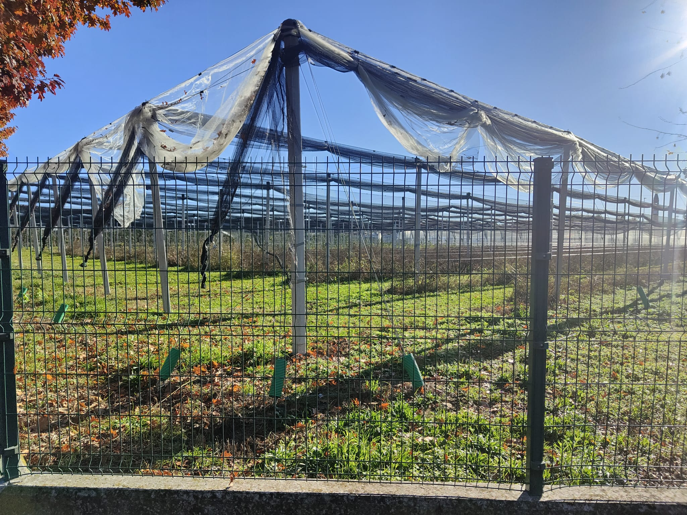

La nostra azienda
Un patrimonio vivo
nel cuore della pianura
L'Azienda San Grato è il cuore pulsante dell'offerta formativa dell'IIS Mendel: un'azienda agricola a indirizzo multifunzionale che si estende su circa 250 ettari nei pressi di Villa Cortese, a pochi minuti a piedi dalla scuola. Non è un semplice campo didattico — è un laboratorio reale, produttivo, dove il ciclo agricolo si compie in tutte le sue fasi, stagione dopo stagione.
— Francesco Ferrazzi, fondatore
Gestita in stretta collaborazione con la Fondazione Ferrazzi-Cova — che sostiene la missione educativa del Mendel fin dal 1935 — l'azienda abbraccia settori produttivi diversificati: dalla frutticoltura alla viticoltura, dall'orticoltura alla cerealicoltura, dall'allevamento alla produzione energetica. Recentemente sono state allestite una serra fungaia e due nuove serre orticole, e il sito ospita un apiario attivo, meta di visite e progetti didattici.
Qui gli studenti non sono semplici spettatori: semina, raccolta, confezionamento, vendita diretta in filiera corta — ogni attività è reale, ogni errore insegna, ogni raccolto è motivo di orgoglio condiviso.


produttivi